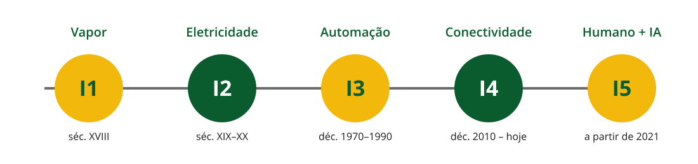
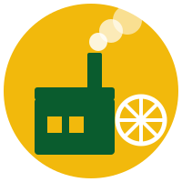

Informática e Sociedade
Técnico em Redes de Computadores · IFSP Boituva · pasquati@ifsp.edu.br · v4
Um salto tecnológico que muda como se produz, e, junto com isso, muda o trabalho, as cidades e a forma como a sociedade se organiza.

Nota
Pergunta rápida: quantas revoluções industriais a maioria dos autores reconhece hoje?
Resposta: quatro consolidadas (1ª a 4ª), e uma 5ª em debate desde 2021, ainda sendo construída.

Dica
Clique no título para abrir o vídeo no YouTube. Ative as legendas e a tradução automática quando necessário.
O que caracterizou a 1ª Revolução Industrial?
Resposta: a mecanização da produção usando a força motriz do vapor, no lugar do trabalho manual e animal.
Dica
Clique no título para abrir o vídeo no YouTube. Ative as legendas e a tradução automática quando necessário.
Qual inovação de gestão surge com a linha de montagem?
Resposta: a produção em série: tarefas repetitivas, padronizadas e cronometradas, divididas entre vários operários.
Dica
Clique no título para abrir o vídeo no YouTube. Ative as legendas e a tradução automática quando necessário.
O que essa revolução tira das mãos do operário?
Resposta: tarefas repetitivas e o controle de processo, que passam a ser automatizadas por eletrônica e computadores.
Dica
Clique no título para abrir o vídeo no YouTube. Ative as legendas e a tradução automática quando necessário.
Se a I3 já tinha computador na fábrica, o que a I4.0 tem de diferente?
Resposta: a conexão em rede entre máquinas, sensores e sistemas: não é mais automação isolada, é um conjunto de dados trocados e decisões tomadas em tempo real.
A Indústria 5.0 substitui a 4.0?
Resposta: não. Ela usa a mesma tecnologia da 4.0, mas muda a prioridade: de “eficiência e lucro” para “pessoas, sustentabilidade e resiliência”.
| Período | Tecnologia motriz | Marca principal | |
|---|---|---|---|
| I1 | séc. XVIII | Vapor | Mecanização |
| I2 | séc. XIX–XX | Eletricidade | Produção em massa |
| I3 | 1970–1990 | Eletrônica | Automação |
| I4 | 2010–hoje | Rede/IIoT/IA | Conexão em tempo real |
| I5 | a partir de 2021 | Rede/IIoT/IA | Humano no centro |
Uberização é o trabalho sob demanda mediado por plataformas e aplicativos digitais.
IFSP Boituva · Informática e Sociedade